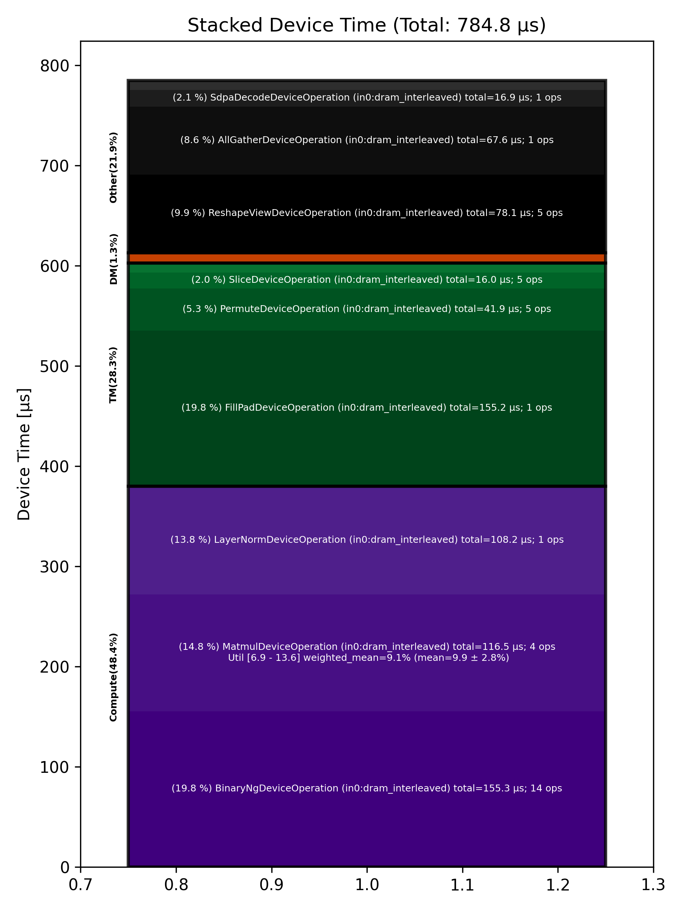

🚀 Performance Report 🚀 ======================== ID Total % Bound OP Code Device Device Time Op-to-Op Gap Cores DRAM DRAM % FLOPs FLOPs % Math Fidelity ------------------------------------------------------------------------------------------------------------------------------------------------------------------------- 24 1.1 % LayerNormDeviceOperation 13 108 μs 1 BF16, BF16 => BF16 65 2.9 % SLOW MatmulDeviceOperation 32 x 2880 x 512 11 42 μs 236 μs 16 41 GB/s 14.1 % 2.3 TFLOPs 6.9 % HiFi2 BF16 x BFP8 => BF16 90 1.0 % ReshapeViewDeviceOperation 16 12 μs 81 μs 72 BF16 => BF16 120 1.7 % SliceDeviceOperation 13 5 μs 161 μs 72 BF16 => BF16 132 1.2 % BinaryNgDeviceOperation 26 16 μs 98 μs 72 BF16, BF16 => BF16 189 1.6 % SliceDeviceOperation 19 5 μs 146 μs 72 BF16 => BF16 207 4.2 % BinaryNgDeviceOperation 6 15 μs 394 μs 72 BF16, BF16 => BF16 230 2.1 % BinaryNgDeviceOperation 3 7 μs 196 μs 72 BF16, BF16 => BF16 277 2.7 % BinaryNgDeviceOperation 23 16 μs 245 μs 72 BF16, BF16 => BF16 291 2.7 % BinaryNgDeviceOperation 25 15 μs 243 μs 72 BF16, BF16 => BF16 346 2.4 % BinaryNgDeviceOperation 16 7 μs 228 μs 72 BF16, BF16 => BF16 378 2.6 % ConcatDeviceOperation 16 7 μs 244 μs 72 BF16, BF16 => BF16 403 5.6 % SLOW MatmulDeviceOperation 32 x 2880 x 64 7 30 μs 508 μs 2 12 GB/s 4.3 % 0.4 TFLOPs 9.6 % HiFi2 BF16 x BFP8 => BF16 439 1.3 % ReshapeViewDeviceOperation 14 3 μs 126 μs 32 BF16 => BF16 477 2.0 % SliceDeviceOperation 19 2 μs 190 μs 16 BF16 => BF16 499 1.0 % PermuteDeviceOperation 21 4 μs 93 μs 16 BF16 => BF16 542 1.8 % BinaryNgDeviceOperation 11 5 μs 168 μs 72 BF16, BF16 => BF16 570 2.6 % SliceDeviceOperation 16 2 μs 248 μs 16 BF16 => BF16 597 2.6 % PermuteDeviceOperation 23 4 μs 245 μs 16 BF16 => BF16 632 1.0 % BinaryNgDeviceOperation 13 5 μs 87 μs 72 BF16, BF16 => BF16 667 1.8 % BinaryNgDeviceOperation 17 3 μs 173 μs 72 BF16, BF16 => BF16 689 2.7 % BinaryNgDeviceOperation 4 5 μs 257 μs 72 BF16, BF16 => BF16 717 2.7 % BinaryNgDeviceOperation 31 5 μs 257 μs 72 BF16, BF16 => BF16 748 2.6 % BinaryNgDeviceOperation 30 3 μs 247 μs 72 BF16, BF16 => BF16 784 2.6 % ConcatDeviceOperation 5 2 μs 252 μs 32 BF16, BF16 => BF16 807 2.8 % InterleavedToShardedDeviceOperation 2 1 μs 272 μs 16 BF16 => BF16 835 2.6 % PagedUpdateCacheDeviceOperation 25 4 μs 244 μs 16 BF16, BF16 => BF16 883 3.8 % SLOW MatmulDeviceOperation 32 x 2880 x 64 7 30 μs 341 μs 2 12 GB/s 4.3 % 0.4 TFLOPs 9.6 % HiFi2 BF16 x BFP8 => BF16 914 1.0 % ReshapeViewDeviceOperation 20 3 μs 94 μs 32 BF16 => BF16 961 1.8 % PermuteDeviceOperation 8 4 μs 170 μs 32 BF16 => BF16 963 1.1 % InterleavedToShardedDeviceOperation 25 1 μs 104 μs 16 BF16 => BF16 996 1.6 % PagedUpdateCacheDeviceOperation 26 4 μs 151 μs 16 BF16, BF16 => BF16 1054 1.1 % PermuteDeviceOperation 11 8 μs 101 μs 72 BF16 => BF16 1087 2.9 % SdpaDecodeDeviceOperation 10 17 μs 264 μs 72 BF16, BF16 => BF16 1100 3.6 % PermuteDeviceOperation 30 22 μs 326 μs 72 BF16 => BF16 1127 2.4 % ReshapeViewDeviceOperation 2 14 μs 215 μs 16 BF16 => BF16 1161 3.6 % SLOW MatmulDeviceOperation 32 x 512 x 2880 30 15 μs 336 μs 45 113 GB/s 39.2 % 6.3 TFLOPs 13.6 % HiFi4 BF16 x BFP8 => BF16 1201 4.4 % AllGatherDeviceOperation 0 68 μs 360 μs 24 BF16 => BF16 1221 1.8 % FillPadDeviceOperation 27 155 μs 15 μs 8 BF16 => BF16 1267 0.4 % FastReduceNCDeviceOperation 21 10 μs 34 μs 72 BF16 => BF16 1311 0.8 % SliceDeviceOperation 10 3 μs 76 μs 72 BF16 => BF16 1319 2.1 % BinaryNgDeviceOperation 2 5 μs 194 μs 72 BF16, BF16 => BF16 1364 2.9 % ReshapeViewDeviceOperation 22 45 μs 234 μs 72 BF16 => BF16 1388 2.8 % BinaryNgDeviceOperation 30 49 μs 218 μs 72 BF16, BF16 => BF16 ------------------------------------------------------------------------------------------------------------------------------------------------------------------------- 100.0 % 44 device ops, 0 host ops, 0 signposts 785 μs 8,871 μs 📊 Stacked report 📊 ==================== Total % Op Code Device Time Sum Op Count Op Category Min FLOPs Max FLOPs Mean FLOPs Std FLOPs Weighted Mean FLOPs ----------------------------------------------------------------------------------------------------------------------------------------------------------------------------- 19.78 % BinaryNgDeviceOperation (in0:dram_interleaved) 155.26 μs 14 Compute 19.77 % FillPadDeviceOperation (in0:dram_interleaved) 155.17 μs 1 TM 14.85 % MatmulDeviceOperation (in0:dram_interleaved) 116.52 μs 4 Compute 6.88 % 13.62 % 9.92 % 2.78 % 9.14 % 13.78 % LayerNormDeviceOperation (in0:dram_interleaved) 108.17 μs 1 Compute 9.95 % ReshapeViewDeviceOperation (in0:dram_interleaved) 78.08 μs 5 Other 8.62 % AllGatherDeviceOperation (in0:dram_interleaved) 67.65 μs 1 Other 5.34 % PermuteDeviceOperation (in0:dram_interleaved) 41.95 μs 5 TM 2.15 % SdpaDecodeDeviceOperation (in0:dram_interleaved) 16.85 μs 1 Other 2.04 % SliceDeviceOperation (in0:dram_interleaved) 16.04 μs 5 TM 1.21 % FastReduceNCDeviceOperation (in0:dram_interleaved) 9.51 μs 1 Other 1.18 % ConcatDeviceOperation (in0:dram_interleaved) 9.27 μs 2 TM 1.07 % PagedUpdateCacheDeviceOperation (in0:dram_interleaved) 8.36 μs 2 DM 0.25 % InterleavedToShardedDeviceOperation (in0:dram_interleaved) 1.99 μs 2 DM -----------------------------------------------------------------------------------------------------------------------------------------------------------------------------
